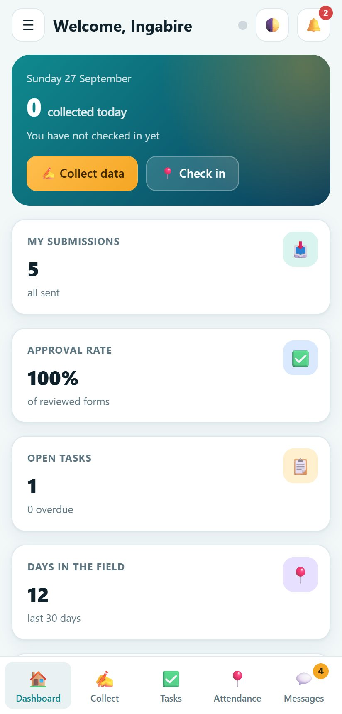
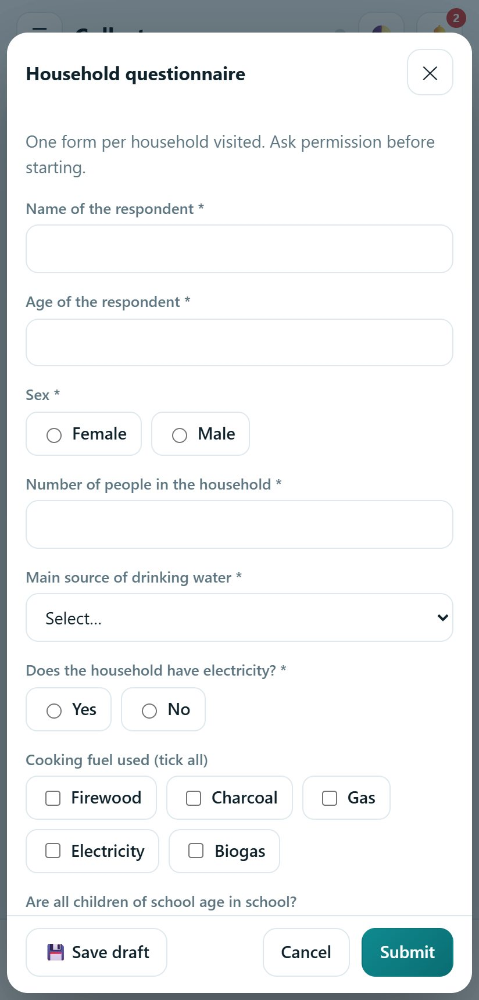
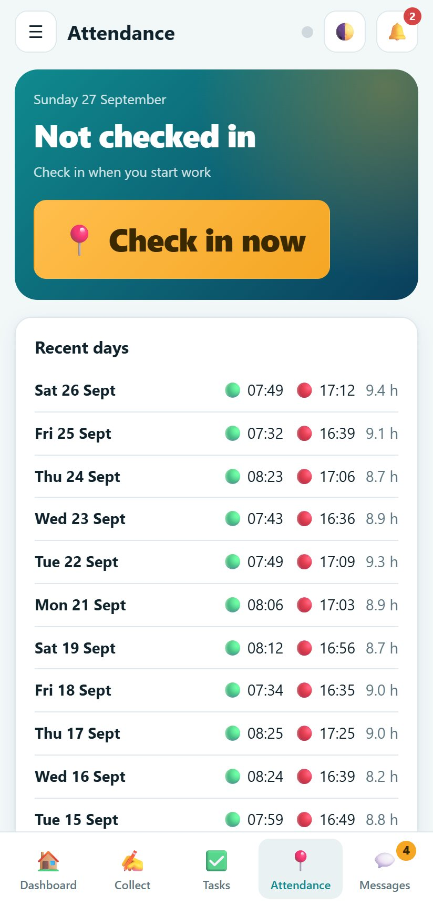

FMIS
Field Management Information System: collect data, manage your team, follow progress and report, in the field and at the office.
One workspace for your whole field team
FMIS is for any institution, project or individual that collects data and manages people in the field: surveys, monitoring, inspections, programme delivery and reporting. Everything works on the device with no internet. When you turn on cloud sync, the team shares one workspace and reports arrive as soon as a phone is online.
- Press Open the web app and choose Explore with demo data, or Create a workspace.
- Sign in as any person in the demo. The PIN is 1234.
- Look at the forms, submissions, tasks, map and reports.
- To use it for real, create your workspace, add your team and turn on cloud sync.
Open the web app Android app (APK) Windows installer Guide (PDF)
Demo workspace
A household survey team with 11 people, forms, tasks, GPS points and reports, so you can try every screen and every role.
Your own workspace
Create it in two minutes. You are the Admin: add people, build forms, and invite your team by code.
Screen by screen
Real screens from the web app, using the demo workspace. Click a screenshot to enlarge it.
Tip: use the left and right arrow keys.
Built for the phone in your hand
Field agents collect data, check in with GPS, update tasks and message the team from a phone. Everything is saved on the phone first.



Everything a field programme needs
The same features on the web, on Windows and on Android.
16 question types
Short and long text, number, decimal, date, time, date and time, single and multiple choice, yes/no, rating, GPS, photo, audio recording, barcode/QR code and phone number, plus notes.
Skip logic and validation
Show a question only when an earlier answer matches a condition, and require answers to compare correctly against each other, for example an end date after a start date.
Repeat groups
Collect a repeatable list inside one form, such as one entry per household member or asset, with add and remove on the fill screen and one row per entry in the export.
GPS check-in and field map
Field agents check in and out, and every submission can carry a GPS point shown against the real Rwanda sector it falls in. See every point on a map that works offline.
Tasks and projects
Group work into projects with targets, assign tasks, set due dates and follow progress from the field.
Review and quality
Supervisors approve, return for correction or reject each submission with a note. Approved data is locked.
Team and roles
Add people by hand or import a CSV list. Five roles decide who can see and do what.
Reports and exports
Print or save summary reports as PDF, and export responses, attendance, performance and the team list to Excel.
Performance and certificates
A score for each field agent, and printable certificates for training and good work.
Messages and announcements
Team-wide announcements, project chats and direct messages, so questions get answered in the app.
Cloud sync
Turn it on and every device shares one workspace. It still works with no signal and catches up when the phone is online.
Everyone sees what they should
Access is enforced on the server as well as in the app.
| Role | What they do | What they see |
|---|---|---|
| Admin | Owns the workspace, manages the team, settings, projects and forms | Everything |
| Manager | Runs projects and the team, builds forms, reviews work | Everything except the Admin's settings |
| Supervisor | Assigns tasks, reviews submissions and reports | All field work of the team |
| Field agent | Collects data, checks in, sends reports, updates own tasks | Own work, published forms, team chat |
| Viewer | Read only, for funders and partners | Projects, tasks and approved data |
From one device to the whole team
- The Admin creates the workspace and adds the team.
- In Settings the Admin signs in to a cloud account and turns on cloud sync.
- The Admin presses Invite someone and sends each person a one-time code by WhatsApp or SMS.
- Each person opens FMIS on their phone or computer, chooses Join a workspace online and enters the code, their phone number and a PIN.
- From then on, submissions, tasks, messages and reports travel between devices. Each role receives only what it may see.
Your data, your control
Everything is saved on the device first. Backups are one button. The Admin can remove anyone's access at any time, and that person is cut off at once.
Works with poor networks
Forms, GPS and photos work with no signal. Changes wait on the phone and are sent when it is online.
Any organisation, any size, or just you
Institutions and NGOs
Run baseline and endline surveys, monitoring visits and programme reporting across districts with one system.
Research and consulting firms
Manage enumerators, review data quality the same day and give clients clean exports.
Individuals and small teams
A single person can use FMIS as a personal field notebook with forms, tasks and reports, and add teammates later.
Which version suits you
| Web | Windows | Android | |
|---|---|---|---|
| Needs installing | No | Yes | Yes |
| Works without internet | Keep the tab open | Yes | Yes |
| GPS, photos and audio | Yes, in a browser that allows it | Photos and audio from files, location typed in | Yes, GPS and camera |
| Barcode/QR field | Type or paste the code | Type or paste the code | Type or paste the code |
| Cloud sync between devices | Yes | Yes | Yes |
| PDF and Excel exports | Yes | Yes | Yes |
Good to know
Do field agents need internet to collect data?
No. Forms, GPS, photos, check-ins and tasks work with no connection. Everything is saved on the device and is sent when it goes online.
Is our data safe?
Data stays on your devices until you turn on cloud sync. With sync on, it travels over a secure connection, each person signs in with a phone number and PIN, and the server decides who can read or change what. Use a strong PIN and remove people who leave.
Can I change the forms after people started collecting?
Yes. Edit and publish the form again. Answers already collected stay as they are, and new answers follow the new questions.
What is skip logic and how do repeat groups work?
Skip logic shows a question only when an earlier answer matches a condition you set, so a form does not ask irrelevant questions. A repeat group lets one form collect a list, such as one entry per household member: the person filling it adds or removes entries, and the export gives one row per entry alongside the form's other answers.
Can I scan a barcode?
The barcode/QR field accepts a typed or pasted code today on every device. Camera scanning is being added to the Android app; until then, type or paste the code.
What happens if two people edit at the same time?
The most recent change wins for the same record. People collecting data each create their own records, so they never overwrite each other. Approved submissions are locked.
Does it work in Kinyarwanda and French?
The menus are available in English, French and Kinyarwanda. Your forms can be written in any language.
Can we use it for a project with many teams?
Yes. Create one workspace per project or per organisation, add managers and supervisors, and invite field agents with codes.
Start your workspace in two minutes
Open the demo, look at every screen and every role, then create your own workspace.